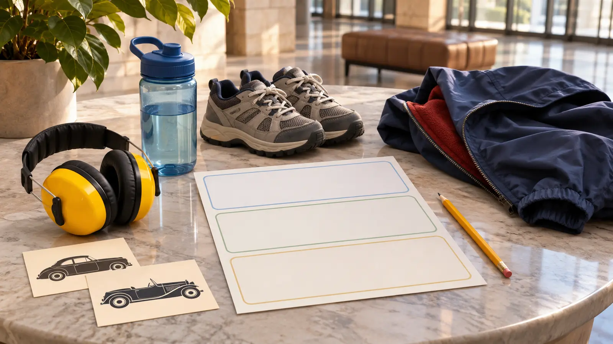

Room one: oldest surprise
Choose one early vehicle and ask what problem its shape, wheel, lamp or control was trying to solve. Read one label together; do not assign every label.
NORWICH · INDOOR DAY TRIP · AUTHORITY-EXPANSION
More than 160 vehicles sounds like a target. It is not. Pick three rooms, let each kid choose one machine, use only the two cars the museum says visitors may sit in, and leave before every hood starts looking the same.

The Northeast Classic Car Museum in Norwich is a real collection, not an indoor playground. The museum says it displays more than 160 vehicles across more than 80,000 square feet, plus airplane engines, vintage clothing, videos and storyboards. That is enough material to reward a child who likes machines, design or history—and enough to flatten a child who is expected to admire every car.
From central Syracuse, budget roughly 75–90 minutes each way in ordinary conditions, then check the live route, weather and construction immediately before leaving. Use a 90-minute museum target, not an all-day obligation. The November 7–8 weekly roundup owns this weekend’s live events; this is an evergreen Norwich plan and does not replace it.
The official admission page reviewed November 7 listed adults at $15, students ages 6–18 at $8 and children under 6 free. It said advance-sale tickets may take up to a week to become usable, do not expire, and are not the right tool for an immediate visit; in-person admission is the cleaner same-day plan. Prices, age bands, payment methods and ticket terms are volatile. Price the actual household on the official page and call before building the trip around a discount, pass or group rate.
The museum lists Thanksgiving, Christmas and Easter closures, a 1 p.m. Christmas Eve close and other holiday details. Recheck for the exact date. Arriving an hour before the earlier published close is the minimum admission boundary, not enough time for this family route.
The current FAQ says noncommercial photography and video are allowed. It also says only two cars are available to sit in and all other vehicles, gas pumps and display items are viewing-only. A child seeing an open door, step or running board is not permission. Ask staff, keep food and bottles away from displays, use walking feet and keep hands off barriers, ropes, engines and clothing.
Give each child one camera mission: a hood ornament shape, a dashboard control and a wheel difference. Do not photograph other visitors closely or post a child’s location in real time. The no-posting photo plan keeps the day about observation.
The FAQ says the museum is wheelchair accessible and offers five motorized scooters, one wheelchair and two strollers without charge on a first-come basis. Those statements do not guarantee a device, battery, size fit, transfer help, clear route, quiet room or accessible restroom feature on a particular day. Call ahead when any feature decides the trip. The collection’s 80,000-plus square feet can be tiring; the museum itself warns about stamina.
Large rooms can carry voices, videos and mechanical sounds. Bring hearing protection only if the child already uses it and can still receive adult instructions; verify the museum permits it. Plan one bench reset and a no-argument exit. For a smaller art-first indoor option, use the Syracuse University Art Museum plan.
The official pages reviewed did not promise an on-site family meal, specific restroom layout, water station, bag check or outside-food permission. Eat before or after, carry only necessary medication and a small permitted bag, and call about food allergies, nursing, restroom access or bag rules when they matter. Do not create a picnic beside collection objects.
Snow or ice: the museum may be indoors, but the drive is not. Check National Weather Service forecasts and New York road conditions; a paid or planned visit does not justify a bad route. Collection overload: cut to one room and the permitted sit-in car. Touch struggle: leave instead of repeating the warning across 160 vehicles. Low energy: oldest car, one child pick, restroom, home. Closed or unclear: call before departure or use the three-object home museum.
The admission page says no pets. Call ahead about a service animal and the exact route if needed; do not infer policy details from a two-word listing. Skip when the drive is unsafe, the child must climb or touch to enjoy a collection, a required mobility device is unconfirmed, the family needs a guaranteed meal, or a 90-minute viewing museum is the wrong sensory fit. The Utica Children’s Museum guide solves a more hands-on indoor day.
Reviewed November 7, 2026 using the museum’s official admission and policy page, FAQ and exhibit page. The three-room route, time boxes and exit rule are independent editorial planning, not museum policy or a claim about today’s collection. No affiliate or booking links are attached.
MAKE THE WEEK COUNT
Build the plan your family can finish well, then leave enough energy for the next part of the day.
More family plans